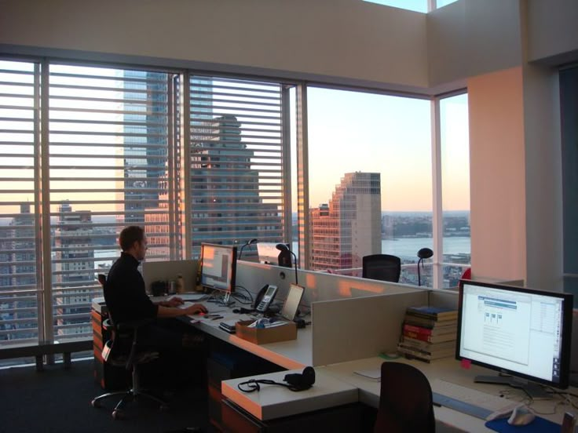

"Live as if you were to die tomorrow. Learn as if you were to live forever." – Mahatma Gandhi
Di era digital, terdapat godaan untuk selalu update mengenai berita terkini sekecil apapun. Hal tersebut tentunya akan mempengaruhi waktu belajar kita, entah itu untuk cek WhatsApp dari doi, login game, buka media sosial, atau bahkan sekedar scroll galeri.
Strategi Belajar Efektif:
🔗 Referensi: verywellmind Blog
"The only way to do great work is to love what you do." - Steve Jobs
Dunia kerja pada kenyataannya tidak semanis dengan apa yang telah kita bayangkan. Hal paling umumnya adalah kenyataan bahwa mencari kerja tidak semudah itu. Bahkan terkadang, meski kita sudah mendapat pekerjaan, jika kita menjalaninya dengan berat hati, hal tersebut dapat memicu hal yang tidak kita inginkan.
Realita Dunia Kerja:
"We are what we repeatedly do. Excellence, then, is not an act, but a habit." – Aristotle
Saat memasuki dunia kerja, banyak kebiasaan buruk dari masa kuliah yang bisa jadi bumerang. Hal ini tentunya perlu untuk dihilangkan.
3 Kebiasaan Buruk yang Harus Dihindari: